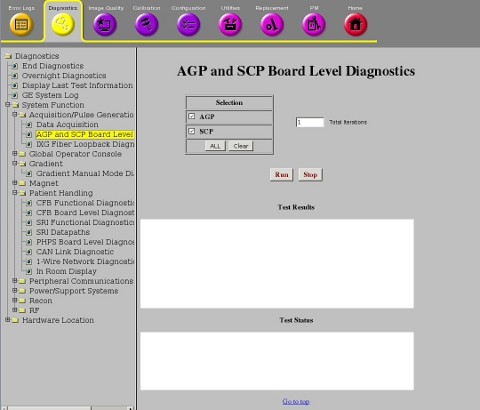

Operating Documentation
Direction 5670006, Rev# 1
Discovery MR750w GEM Service Methods
Module Version 6.0, Version Date 10/18/11
Operating Documentation |
Diagnostics >> System Function >> Acquisition/Pulse Generation >> AGP and SCP Board Level Diagnostics
Diagnostics >> Hardware Location >> PGR Cabinet >> CAM >> AGP and SCP Board Level Diagnostics
Illustration 1: AGP and SCP Board Level Diagnostics

The test set exercises the memory including Random Access Memory (RAM) , Static RAM (SRAM) , and Battery Backed RAM (BBRAM) , Ethernet Controller, and the PCI Bridge using the vendor supplied diagnostics that are accessible via the Scan Control Processor (SCP) serial port.
SCP board
For this diagnostic, the minimum required hardware is the Combined ASC MGD (CAM) chassis with AGP board, SCP board, and the terminal server with a serial connection to the PSE, AGP, and SCP.
| NOTE: | This test takes several minutes to complete. |
The host resets the SCP Board to power PC (PPC) diagnostic mode through the serial port.
Host sends diagnostic commands to the board to invoke the test. The test set exercises the memory, Ethernet controller, and PCI Bridge.
The host parses the test status sent back from the boards and determines if the test passed or failed.
The diagnostic returns a PASS or FAIL result for each of the tested functions, and a general PASS or FAIL at the end of the test.
Run a TPS Reset to recover the system (even if you are running another diagnostic test).